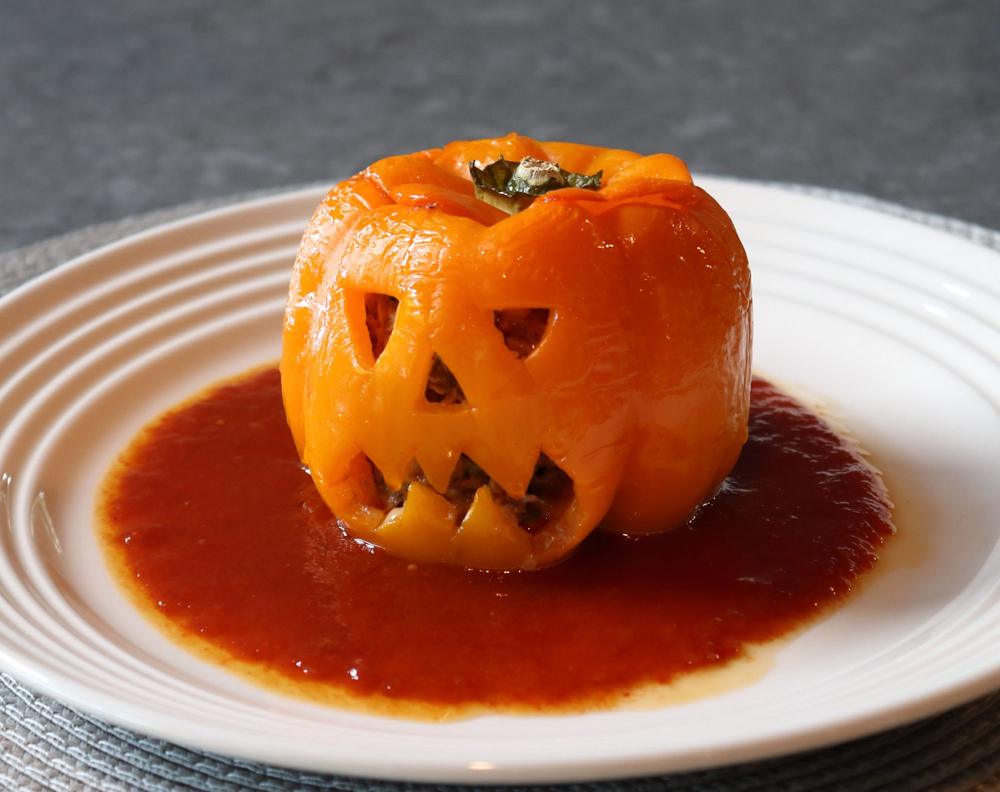

Jack-o'-Lantern Stuffed Peppers

Description
This delightful treat will raise both the undead and the spirits of all your guest this
Halloween! The original creator of this recipe stated clearly that the filling described
below isn't even very good, so why did we include it one our page? Only one way to find out!
Ingredients
- 1 teaspoon olive oil
- 4 large orange bell peppers
- 1 pound ground beef
- 2 teaspoons kosher salt
- ½ teaspoon ground black pepper
- 3 pinches cayenne pepper, or to taste
- 1 teaspoon Worcestershire Sauce
- 3 cloves garlic, minced
- ⅓ cup thinly sliced green onions
- 2 tablespoons salted butter, melted
- 2 tablespoons ketchup
- 1 cup grated sharp Cheddar cheese
- 1 cup cooked rice
- 2 cups seasoned tomato sauce, warmed
Steps
- Preheat the oven to 400 degrees F (200 degrees C). Oil a baking dish with olive oil.
- Use a small knife to cut eyes, nose, and mouth into the flattest side of each pepper, just like a jack-o'-lantern. Cut around the seedpods and remove the tops, trimming and discarding any seeds from under the stems. Trim the white membrane from the inside of each pepper and shake out any seeds. Place in the prepared baking dish.
- Mix together ground beef, salt, pepper, cayenne, Worcestershire sauce, garlic, green onions, melted butter, ketchup, Cheddar cheese, and rice in a bowl until well combined.
- Stuff mixture evenly into peppers and cover with the pepper tops. Wrap the baking dish loosely with foil and place on a sheet pan.
- Bake in the upper center of the preheated oven for 1 hour. Remove the foil and continue baking until peppers are tender and ground beef is cooked through, 10 to 15 more minutes.
- Place stuffed peppers on a few tablespoons of warm tomato sauce. Serve immediately with more sauce on the side.
Conclusion
That's it! You've now made your own cute little pumpy boys with a terrible filling!